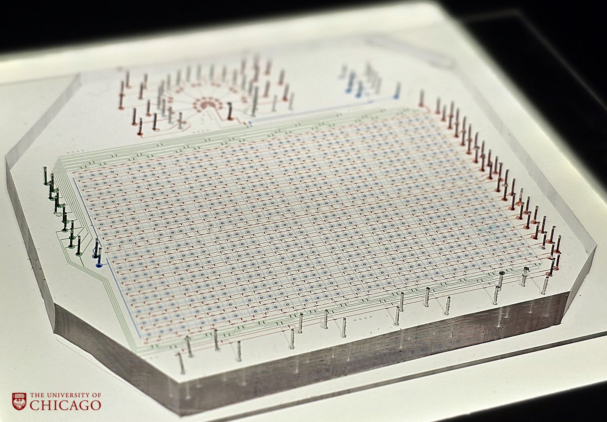
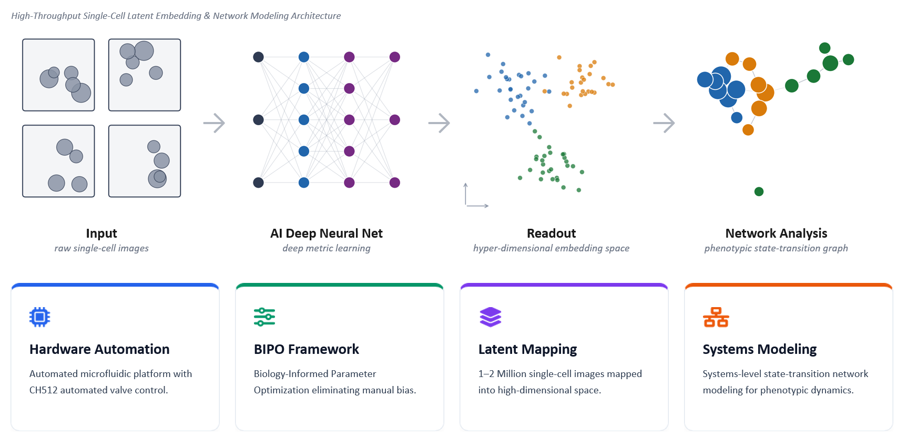
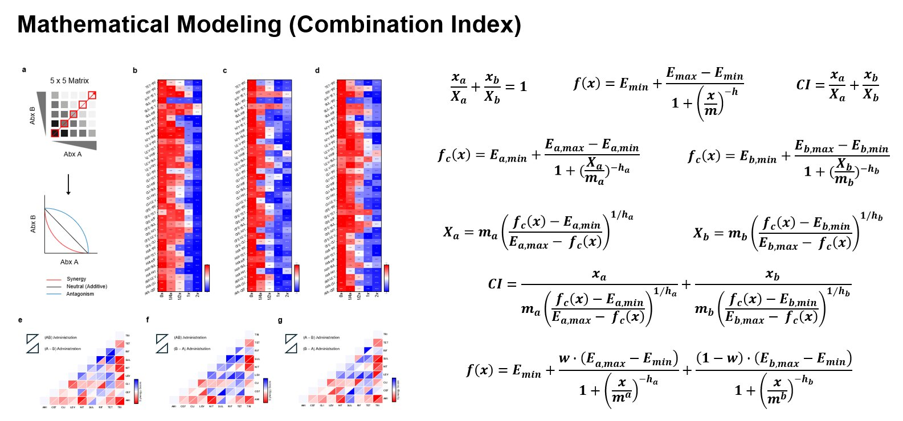

Engineering platforms to decipher complex biological networks.
Bridging large-scale microfluidics, AI-driven systems biology, and microbial engineering, research builds ultra-multiplexed analytical platforms to decode how complex microbial consortia shape host immunity — addressing bottlenecks no conventional system can reach. This integrated approach translates biological complexity into actionable insights, paving the way for precision medicine. Applied work targets hospitalized sepsis patients, decoding how gut microbial dysbiosis collapses immune defense and shapes patient trajectories.

Dr. Yoon Jeong
Understanding how systemic physiological networks process environmental stimuli requires quantitative tools capable of observing biological phenomena at high resolution. My research establishes integrated platform technologies combining microfluidics, deep sequencing, and machine learning to dissect cellular communication paths.

A massively multiplexed microfluidic platform capable of testing 2,048 conditions in a single run (512 × 4), enabling high-throughput screening of drug combinations against microbial communities. Data feeds into a Graphical Neural Network (GNN) model to construct comprehensive predictive models and simulate biological system behavior — predicting multi-drug synergy and antagonism responses at scale.

Quantitative frameworks based on the Combination Index (CI) method rigorously classify drug interactions — synergy, additivity, and antagonism — across multi-antibiotic matrices. Dose–response surfaces derived from 5×5 matrices are modeled with Hill equation-based pharmacodynamic fitting, enabling order-of-administration-aware interaction mapping across complex microbial systems.
Hydrogel-encapsulated bacterial colonies are imaged via time-lapse z-stack microscopy, reconstructed in 3D, and analyzed through automated 2D contouring for colony-level quantification. Environmental features and consortia composition are varied to train machine learning models, enabling time-resolved Microbial Consortia Network Scoring across repeated cycles — revealing emergent ecological dynamics at the community level.